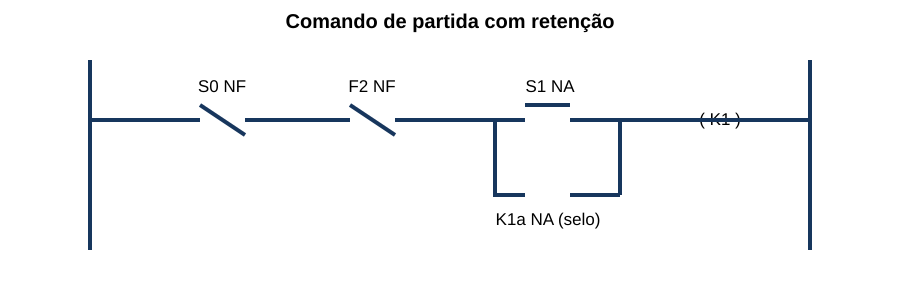
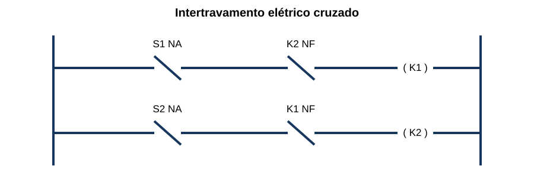
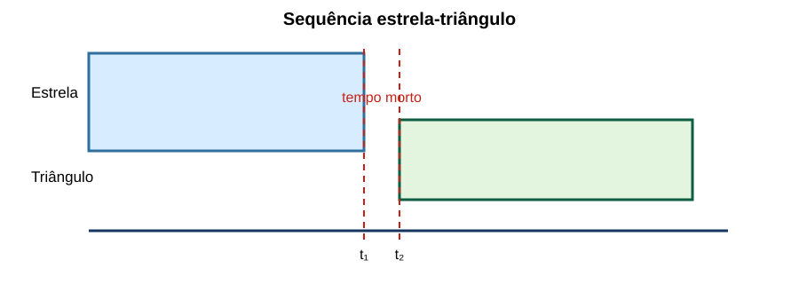

Comandos Elétricos & Motores
15 questões autorais calibradas pelo padrão IDECAN • Bloco Bronze
| Questão 01 | Comando de Partida • Selo Elétrico |
No circuito ladder, S0 é o botão de parada NF, S1 é partida NA e K1a é contato auxiliar do contator.

Após pressionar e soltar S1, o motor permanece ligado porque:A) S0 passa mecanicamente de NF para NA e alimenta a bobina.
B) o relé térmico é curto-circuitado pelo botão de partida.
C) K1a fecha em paralelo com S1 e mantém a bobina energizada enquanto S0 e a proteção permanecem fechados.
D) a bobina K1 armazena energia suficiente para operar sem alimentação.
Gabarito Comentado: Alternativa C
Quando K1 energiza, seu contato auxiliar NA fecha em paralelo com S1. Ao soltar o botão, a corrente continua por K1a, S0 e o contato de proteção. Pressionar parada ou atuar a proteção abre a série e desfaz o selo.
Análise das armadilhas:Confundir retenção elétrica com trava mecânica ou imaginar que o contato de selo deve contornar os dispositivos de segurança.Como pensar nesta questão:Siga a corrente antes, durante e depois de soltar S1; identifique qual caminho alternativo permanece fechado.
| Questão 02 | Motor de Indução • Velocidade e Escorregamento |
Um motor trifásico de quatro polos opera em rede de 60 Hz a 1.740 rpm. Sua velocidade síncrona e seu escorregamento são aproximadamente:
A) 1.800 rpm e 3,33%.
B) 1.740 rpm e 0%.
C) 3.600 rpm e 51,7%.
D) 1.500 rpm e −16%.
Gabarito Comentado: Alternativa A
$n_s=120f/p=120\cdot60/4=1.800\,rpm$. O escorregamento é $s=(1.800-1.740)/1.800=0{,}0333$, ou 3,33%. Em regime motor, a velocidade do rotor fica abaixo da síncrona.
Análise das armadilhas:Usar a velocidade medida como síncrona, esquecer o número de polos ou dividir pela velocidade do rotor.Como pensar nesta questão:Calcule primeiro $n_s$; depois compare a diferença entre campo e rotor com $n_s$.
| Questão 03 | Proteção de Motores • Funções |
Em um alimentador de motor, o disjuntor protege contra curto-circuito e o relé de sobrecarga atua sobre o contator. Qual afirmação é adequada?
A) o relé de sobrecarga substitui toda proteção contra curto-circuito por possuir ajuste de corrente.
B) o contator limita a energia de curto-circuito sempre que sua bobina desenergiza.
C) o disjuntor deve ser ajustado exatamente à corrente de partida para atuar em toda aceleração.
D) as proteções devem ser coordenadas: curto-circuito requer interrupção rápida, enquanto sobrecarga admite característica compatível com partida e aquecimento.
Gabarito Comentado: Alternativa D
Curto-circuito e sobrecarga têm naturezas e tempos diferentes. O dispositivo de curto deve interromper correntes elevadas; o relé de sobrecarga acompanha aquecimento sem disparar indevidamente durante partida normal. Contator é manobra, não proteção suficiente contra curto.
Análise das armadilhas:Escolher um único dispositivo para todos os modos de falha ou confundir corrente de partida com sobrecarga permanente.Como pensar nesta questão:Separe magnitude, duração e efeito térmico de cada falta e associe a função protetiva correspondente.
| Questão 04 | Partida Estrela-Triângulo • Corrente e Torque |
Um motor projetado para operar em triângulo na tensão da rede parte em estrela. Desprezando saturação, a corrente de linha da rede e o torque de partida ficam aproximadamente:
A) iguais aos da partida direta, pois a tensão de linha não muda.
B) em um terço dos valores correspondentes à partida direta em triângulo.
C) em $1/\sqrt3$ da corrente e iguais em torque.
D) com corrente dobrada e torque reduzido à metade.
Gabarito Comentado: Alternativa B
Em estrela, cada enrolamento recebe $V_L/\sqrt3$. Como corrente depende da tensão e torque aproximadamente de $V^2$, a corrente de linha vista pela rede e o torque ficam cerca de um terço dos valores da partida direta em triângulo.
Análise das armadilhas:Aplicar apenas o fator $1/\sqrt3$ sem considerar relações de linha ou supor que reduzir corrente não afeta torque.Como pensar nesta questão:Compare a tensão por enrolamento e lembre que torque eletromagnético de partida varia aproximadamente com o quadrado da tensão.
| Questão 05 | Reversão de Motores • Intertravamento |
No comando de reversão, K1 troca duas fases para um sentido e K2 para o outro.

Para impedir fechamento simultâneo, é adequado usar:A) apenas duas lâmpadas indicadoras, uma para cada sentido.
B) um único contato NA de K1 em série com as duas bobinas.
C) contatos NF cruzados e intertravamento mecânico entre K1 e K2, quando requerido.
D) temporizador em paralelo com os contatos principais, sem bloqueio cruzado.
Gabarito Comentado: Alternativa C
O contato NF de K1 deve bloquear a bobina de K2 e vice-versa. O intertravamento mecânico adiciona barreira física contra fechamento simultâneo, que poderia provocar curto entre fases.
Análise das armadilhas:Usar sinalização como proteção ou colocar contato de bloqueio com lógica e polaridade incorretas.Como pensar nesta questão:Teste a condição perigosa: com K1 fechado, percorra o circuito da bobina K2 e confirme onde ele é interrompido.
| Questão 06 | Soft-Starter • Limites de Aplicação |
Uma bomba exige redução do impacto hidráulico na partida e na parada, mas opera sempre em velocidade nominal. Em comparação com inversor de frequência, uma soft-starter:
A) controla continuamente frequência e rotação com a mesma flexibilidade de um inversor.
B) eleva a corrente de partida para obter aceleração mais suave.
C) substitui válvulas e qualquer estudo do sistema hidráulico.
D) controla a tensão durante aceleração/desaceleração, mas normalmente não é solução para variação contínua de velocidade.
Gabarito Comentado: Alternativa D
A soft-starter utiliza controle de tensão para suavizar partida e, em aplicações adequadas, parada. Após aceleração pode operar com bypass. Para controle contínuo de velocidade e frequência, o inversor é a solução típica.
Análise das armadilhas:Confundir redução de tensão com variação controlada de frequência ou atribuir ao equipamento correção universal do processo.Como pensar nesta questão:Pergunte se a necessidade existe só na transição ou durante todo o regime de operação.
| Questão 07 | Inversor de Frequência • Frequência e Rotação |
Um motor de quatro polos é comandado a 45 Hz. Desprezando o escorregamento, a velocidade aproximada do campo girante é:
A) 1.350 rpm.
B) 900 rpm.
C) 1.500 rpm.
D) 2.700 rpm.
Gabarito Comentado: Alternativa A
$n_s=120\cdot45/4=1.350\,rpm$. A rotação mecânica real do motor de indução será ligeiramente menor, conforme o escorregamento requerido pela carga.
Análise das armadilhas:Aplicar diretamente a proporção 45/60 à rotação de um motor de dois polos ou usar 60 como número de polos.Como pensar nesta questão:Use a frequência efetiva fornecida pelo inversor, não necessariamente a da rede.
| Questão 08 | Circuito de Comando • Diagnóstico |
A bobina K1 não energiza. Há tensão antes de S0, depois de S0 e depois do contato do relé térmico, mas não há tensão no terminal após S1 quando ele é pressionado. O defeito mais provável é:
A) curto nos contatos principais de K1.
B) selo K1a fechado permanentemente.
C) botão S1 ou sua conexão em circuito aberto.
D) motor com escorregamento acima do nominal.
Gabarito Comentado: Alternativa C
A tensão chega até a entrada de S1 e desaparece depois dele mesmo durante o acionamento. Isso localiza a interrupção no botão ou em sua conexão imediata. Defeitos no circuito de potência não explicam esse ponto de medição no comando.
Análise das armadilhas:Trocar componente por associação com o sintoma final sem seguir as medições disponíveis.Como pensar nesta questão:Percorra o circuito ponto a ponto e localize o primeiro lugar em que a tensão esperada desaparece.
| Questão 09 | Relé de Sobrecarga • Falta de Fase |
Um motor trifásico em operação perde uma fase e continua recebendo alimentação pelas outras duas. Um relé de sobrecarga adequadamente selecionado pode atuar porque:
A) a tensão nas fases restantes se torna sempre nula.
B) a perda de fase desequilibra correntes e aquecimento, podendo superar o limite térmico.
C) o rotor passa instantaneamente à velocidade síncrona.
D) o fator de potência torna-se unitário e provoca curto franco.
Gabarito Comentado: Alternativa B
A falta de fase pode produzir sobrecorrente nas fases remanescentes, redução de torque e aquecimento severo. Relés sensíveis à perda/desequilíbrio ou com adequada resposta térmica ajudam a proteger, conforme o esquema.
Análise das armadilhas:Imaginar que o motor necessariamente para de imediato ou atribuir a atuação a curto-circuito inexistente.Como pensar nesta questão:Pense em torque reduzido, corrente exigida para manter carga e aquecimento dos enrolamentos.
| Questão 10 | Temporização • Transição Estrela-Triângulo |
No diagrama temporal, o contator estrela abre em $t_1$ e o triângulo fecha em $t_2$.

O intervalo entre $t_1$ e $t_2$ serve principalmente para:A) manter estrela e triângulo simultaneamente fechados e elevar o torque.
B) alimentar a bobina do contator principal com duas tensões.
C) garantir que o motor atinja velocidade síncrona exata antes de qualquer transição.
D) evitar sobreposição dos contatores de estrela e triângulo, reduzindo o risco de curto durante a comutação.
Gabarito Comentado: Alternativa D
Deve existir tempo morto suficiente para a abertura do contator estrela antes do fechamento do triângulo. Sobreposição conecta indevidamente terminais dos enrolamentos e pode causar corrente severa. Tempo excessivo também pode gerar transiente na reconexão.
Análise das armadilhas:Interpretar temporização apenas como tempo total de aceleração e esquecer a sequência mecânica dos contatores.Como pensar nesta questão:Desenhe os estados possíveis e elimine qualquer intervalo em que estrela e triângulo estejam fechados juntos.
| Questão 11 | Contatores • Categoria de Utilização |
Dois contatores possuem a mesma corrente térmica convencional, mas categorias de utilização diferentes. Para manobrar repetidamente motor de gaiola, a seleção deve considerar:
A) categoria de utilização, corrente operacional, tensão, frequência de manobras e regime da carga.
B) somente a corrente térmica, pois abertura de motor não afeta desgaste dos contatos.
C) apenas a tensão da bobina, independentemente da corrente dos contatos principais.
D) a cor e o tamanho físico como prova suficiente de capacidade de manobra.
Gabarito Comentado: Alternativa A
A capacidade de estabelecer e interromper corrente depende da natureza da carga e da operação. Categoria de utilização, corrente operacional, ciclo e vida elétrica podem tornar inadequado um contator com corrente térmica aparentemente suficiente.
Análise das armadilhas:Comparar equipamentos por um único número de placa que não representa o dever de manobra.Como pensar nesta questão:Identifique o que será ligado, desligado, quantas vezes e em qual estado elétrico.
| Questão 12 | Frenagem de Motor • Injeção CC |
Na frenagem por injeção de corrente contínua em motor de indução, após retirar a alimentação CA:
A) inverte-se permanentemente a sequência de fases para manter o rotor parado.
B) aplica-se CC controlada ao estator, produzindo campo estacionário e torque de frenagem, com limitação térmica.
C) o motor passa a gerar tensão síncrona sem perdas até parar.
D) curto-circuitam-se os terminais sem controle para maximizar corrente.
Gabarito Comentado: Alternativa B
A corrente contínua cria fluxo estacionário; o rotor em movimento corta esse campo e desenvolve torque contrário. Energia é dissipada e a aplicação precisa limitar corrente e tempo para evitar aquecimento.
Análise das armadilhas:Confundir com reversão por contracorrente ou supor ausência de perdas durante a frenagem.Como pensar nesta questão:Pergunte qual campo é criado no estator e para onde vai a energia cinética.
| Questão 13 | Transformador de Comando • Dimensionamento |
Uma fonte de comando alimenta simultaneamente duas bobinas de contatores, cada uma exigindo 180 VA na atração, e cargas auxiliares de 60 VA. Aplicando margem de 20%, a potência mínima calculada é:
A) 420 VA.
B) 450 VA.
C) 504 VA.
D) 600 VA.
Gabarito Comentado: Alternativa C
A demanda simultânea é $2\cdot180+60=420\,VA$. Com margem: $420\cdot1{,}20=504\,VA$. Deve-se ainda conferir queda de tensão e diferença entre potência de atração e manutenção.
Análise das armadilhas:Somar apenas potências de manutenção ou aplicar a margem individualmente e arredondar de modo inconsistente.Como pensar nesta questão:Identifique quais cargas podem atuar juntas e use o pior transitório simultâneo previsto.
| Questão 14 | Segurança Funcional • Rearme |
Após falta de energia, um transportador comandado por selo elétrico não deve partir sozinho quando a tensão retornar. Isso é obtido quando:
A) um contato NF mantém o contator fechado mecanicamente durante a falta.
B) o contato de selo é ligado antes do botão de parada, ignorando a cadeia de segurança.
C) a bobina recebe alimentação direta, sem botões, enquanto houver tensão.
D) o circuito exige novo comando de partida, pois a queda de tensão desfez a retenção da bobina.
Gabarito Comentado: Alternativa D
Com retenção por bobina, a perda de tensão abre o contator e o contato auxiliar de selo. No retorno, o circuito permanece aberto até nova ação de partida, evitando rearranque inesperado.
Análise das armadilhas:Confundir continuidade operacional com retorno automático seguro ou contornar os dispositivos de parada.Como pensar nesta questão:Simule três estados: ligado, ausência de tensão e retorno sem intervenção do operador.
| Questão 15 | Partida de Motor • Escolha da Solução |
Uma carga exige alto torque desde velocidade zero, controle amplo de velocidade e rampas ajustáveis. A rede também limita corrente de partida. Entre as opções, a mais coerente é:
A) inversor dimensionado para o motor e o perfil de torque, com parâmetros e proteção compatíveis.
B) contator direto, pois a elevada corrente garante atendimento ao limite da rede.
C) soft-starter em bypass permanente, usada para regular frequência durante todo o processo.
D) partida estrela-triângulo, que fornece torque nominal desde zero e controle contínuo de velocidade.
Gabarito Comentado: Alternativa A
O inversor controla frequência e tensão, podendo oferecer torque e rampa adequados e limitar corrente conforme seu dimensionamento e a carga. Estrela-triângulo reduz torque; soft-starter não regula continuamente a frequência.
Análise das armadilhas:Escolher a solução que reduz corrente sem verificar torque ou confundir soft-starter com inversor.Como pensar nesta questão:Cruze quatro requisitos: torque de partida, corrente permitida, faixa de velocidade e regime térmico.